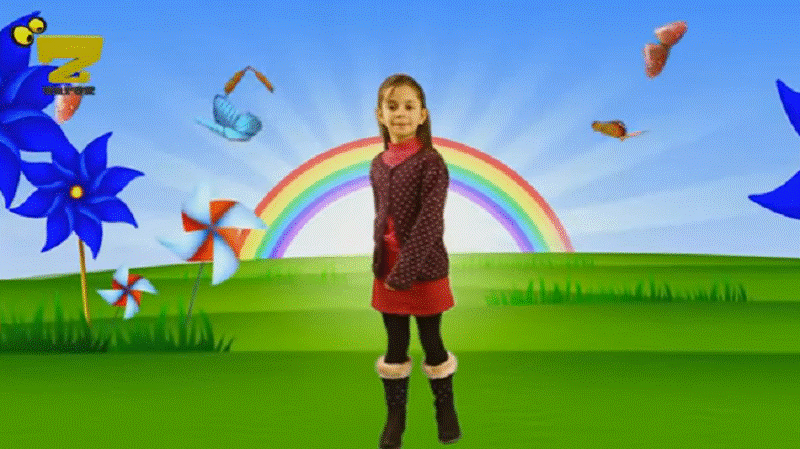

Patricia Edgar: What are Children's Television Programs and should we preserve them? Part One of Three
Posted on September 20, 2017 by Nicholas Gruen

'Tell me a story!' What
child has not expressed those words? Children find the fantasy world a story
transports them into, comforting, entertaining and enlightening. As a prelude
to sleep stories allow them to dream the impossible. They explain the strong
emotions children experience as they grow up, teach them about their tribe,
their culture and their place in the world and give them a shared sense of
purpose. Throughout human history, stories have been the glue that has civilized
and bound people together in a community as humane beings. Stories stimulate
our imagination, opening up the infinite opportunities that life presents.
Developing imagination, Albert Einstein believed, was more important than
imparting knowledge, as wondering is the basis of invention, of all development
and understanding. It would be a dystopian world without stories.
But stories have had different functions over the centuries and 'children' have been variously defined and regarded. Western notions of childhood have changed dramatically, especially in the past 300 years, as has the way stories have been presented and enjoyed. The idea of childhood as a special stage of life is a relatively new middle-class phenomenon. Before the 18th century children were seen as little adults, dressed as adults and expected to work like adults. They got no special consideration at law; until 1780 over two hundred offences were punishable by hanging for children as well as adults. The youngest convict on the First Fleet was John Hudson, a nine-year-old chimney sweep who had been convicted of stealing clothes and a pistol. The reality of life for young children has been an economic, social and cultural construction over centuries.
So, given the current Australian and Children's Screen Content Review, which is to determine the future of regulation for children's media content, it is important to ask some fundamental questions. Is childhood today a chronological stage or a system of constructed values? Has childhood changed since the Children's Television Standards (CTS) were introduced in the early 1980's? Do we still mean the same thing when we talk about a children's program in 2017 as we did when quotas were implemented in 1984? And what special functions do such defined programs fill that warrant ongoing regulatory protection in a dramatically changing digital world?
The rise of childhood can be traced back to the Reformation. The Puritans of the 17th Century were the first to stress the child's moral autonomy. They believed children had to be taught to think for themselves; to internalise moral values and to make choices for which they were personally responsible so they supported the need for education.
During The Age of Enlightenment, in 1762, Rousseau published his treatise on education, Emile, arguing his theory of the innocence of childhood. Liberal and permissive attitudes to children began to take root, but the ideals of the time didn't match social practice. Rousseau left his five illegitimate children in foundling homes. 'Woman is especially made for man's delight', he wrote, and 'for that reason there is no need even to teach girls to write'.
By 1830, despite calls for education, half Britain's workforce in the cotton mills was child labor. The English Factory Act of 1833 limited child labor to 8 hours a day, but because adults argued for the same terms, the limit remained at 10 hours. Child exploitation only came to an end with the passing of The Education Act of 1870, which required children up to the age of 10 to attend school. It was a start toward the protection of the youngest in society, but it was also because factory owners needed more literate workers who could read instructions for using machinery safely and efficiently. Many needy parents protested and absenteeism from school was common.
The poor continued to be exploited while the children of the affluent middle-class were shipped off to boarding schools, separated from adults and sheltered from the real world. But by the late 19th century, following the industrial revolution, in Australia as well as Britain, growing economic demand for an educated and relatively healthy workforce had produced education for all, and altered the nature of childhood.
In the pre-industrial age stories were told by bards orally and the experience was shared by all ages. The stories, although often cautionary tales, were told uncensored. Fairy tales were not about beautiful princesses in gauzy dresses but 'about child murder, cannibalism, starvation, deformity, desperate human creatures cast in the form of beasts, or chained by spells, or immured alive in thorns'. 1
Such stories enabled people to indulge their lust for sadism; evil was omnipresent but good triumphed. Characters were simplified and polarized to promote understanding among the uneducated; the good were beautiful, the evil were ugly. The overriding message of such stories was that life is a struggle against severe difficulties; they are unavoidable but if you are steadfast in meeting unexpected and unjust hardships, obstacles can be overcome and mastered. They were valuable life lessons for adults and children. 2
This oral form of group entertainment disappeared when the printing press was invented and children were sent to school and separated from their parents. As they were taught to read, their stories became simpler and more didactic. The long-accepted and traditional elements in stories were squeezed out of the official child culture to protect children from knowing about the murder and mayhem and horrors of life that might 'disturb' them. Stories acquired taste; they began to taste childish. Humanists taught courtly behavior. Religious reformers did not see the need for anything but religious reading. If children wanted adventure it could be found in the bible. Both groups agreed the 'chapbooks' (akin to comics) were harmful for children. This developing storybook culture no longer reflected the needs of children in a shared community; it reflected the needs and values of middle-class parents and teachers who expected to train well-behaved children to be seen but not heard. Emotionally, children were cast adrift to deal with their inner impulses and feelings.
Human enterprise seizes opportunity and in the early eighteenth century it was discovered money could be made from a children's publishing industry. The Arabian Nights (1706) and Mother Goose (1760's) a compilation of nursery rhymes appeared. Grimm's Fairy Tales (1812) were considered too grim for children. Swiss Family Robinson (1812) was basically a religious work. Alice in Wonderland (1865) a fanciful tale and Tom Thumb's Pretty Song Book (1744) a book of nursery rhymes, emerged along with others by liberal minded authors who brought new themes and attitudes to children's books. The toy industry also took off and experts were beginning to complain that toys had become so elaborate they left nothing to the child's imagination. The seeds of the debates that have raged about children's entertainment since were sown.
The dominant philosophical notion put forward by child advocates was that of childhood vulnerability and their need for protection from the secrets of adult life for as long as possible. One of the contradictions of this history is that the glorification of childhood coincided with the greatest exploitation of children. In literature and art the romantics were exalting the purity and innocence of childhood while at the same time the family and the church, which should have been responsible for nurturing children, were agents of repression. 3
The industrial revolution in the 19th century led to children serving as unskilled labor on the production line in the mills, as chimney sweeps, as pick-pockets, as well as lace makers. Eight year old girls dragged coal trucks through wet tunnels on their hands and knees. Charles Dickens wrote a stream of novels exposing the plight of working-class poor and abandoned children. But it would be another century before changes in industrial policy, education, social and welfare reform, a greater knowledge of child development and appreciation of individual differences, would lead to childhood being seen, as it is today, as a stage with special needs. When these changes came they were driven as much by economic need as concern for the well-being of children.
But it would become apparent, despite the repression of the Victorian Age, that children could not be coerced into becoming models of conformity. They simply did not fit a narrow stereotype. The nineteenth century's effort to standardize childhood through schooling failed. It would be some time before it was understood that the purpose of education should be to awaken a child's mind. Such a debate about the purpose of education and schooling is ongoing.
Charles Darwin was the first to keep systematic notes on one of his children to study child development and by 1900 child experts began to emerge and their theories split along several lines. Studies looking at the differences between children found a range of abilities. Behaviorism was one branch that aimed at conditioning children and molding them to a teacher's or parent's will. The French Psychologist Jean Piaget insisted children developed in stages, each step building on previous capacities toward mastery over their world. Research that followed called this 'stage theory' too rigid and arbitrary.
A spate of books on child rearing emerged with Dr Benjamin Spock dominating the field. He challenged behaviourism, relying on work on children's emotional development. Parents by this time were beginning to worry about whether their children would like them as friends rather than authority figures.
Harvard University's Professor Howard Gardner argued that we have multiple intelligences. His work challenged the inadequacy of IQ tests built around words, numbers and logical reasoning which overlooked the intelligences of those with visual, aural and kinesthetic abilities. He saw no division between thinking and feeling and drew attention to the full range of human intelligences. He believed in the plasticity of young minds, which has been borne out by recent brain research.
But despite what has been learned about child development and subsequent changes aimed at improving the well-being of children, many of the tensions in social attitudes toward them remain with us. There is a crisis of confidence among many child-rearing experts, parents and teachers, about how best to rear children. Neither parents nor the wider society are offering children the clear guidance they need and want. There are those who argue that children must be protected and socialized, taught moral values and know their place. With others limited guidance or permissiveness replaces firm rules. A desire for their child's constant happiness and success drives many parents to indulge children, praise mediocrity in the cause of equality, or give them everything but their time.
Adolescents especially are searching for purpose, belief and causes today for without goals that incorporate them within a social group they become self-centred. It is not surprising they are confused given the dramatic 21st century changes in family structure, the impact of globalisation and economic rationalism along with rampant consumerism which has commodified them. Once again an economic revolution has changed the nature of childhood and in turn influenced storytelling.
Many of these changes have occurred since the Children's Television Standards were introduced by the Australian Broadcasting Tribunal in 1984. But over the same period we have made significant progress in our understanding of child development and the functioning of the brain.
Thirty years were added to our life expectancy across the 20th century and for the first time children are a minority, less than twenty per-cent of the population. The social structure in 2017 is radically different from the post war years when most people married and had children and the roles of men, women and children were more clearly delineated. These changes have led to a different experience of childhood. Education, equality for women, the cost of living, work demands and sexual liberation have altered family life. Women are less prepared to accept the role of dependent housewife and the dual income family has to organize its time differently.
Divorce, single parenthood, step families, same-sex couples and multi-generational families make for a varied experience of family life. Parenthood has become a private choice rather than a biological inevitability. Close to a third of our population now comprise free-living young adults aged between 25-40 enjoying long but insecure work hours and very adult-oriented entertainment, often with little interest in marriage or other people's children. And though many of these young adults hold on to the family ties they have, and claim an interest in eventually marrying and having children, the longer they delay the less likely it is to happen. And they question why, as singles, they should accept responsibility for other people's children. Children are not their future.
Add to this social upheaval the communication revolution and the impact of mass and social media. Our storytelling and children's entertainment has changed dramatically as a result of these changes.
Neil Postman claimed technology, starting with the invention of the printing press, eroded the concept of childhood. It disappeared altogether, he claimed, with the advent of television, when once again children were fully exposed to the world of adult values and behavior. It has become impossible to maintain the position that children must be shielded from adult secrets. We have returned to the days when stories were shared by the bards for social groups of all ages. 4
Marshall McLuhan correctly proclaimed the medium was the message as households were redesigned to accommodate the television set. Houses were redesigned to have a family room with the set in the corner turned on all day talking to itself and preschoolers became the heaviest viewers living, exposed to more hours of programming than any other age group. 5
Initially television broke down the pattern that had occurred across the 18th and 19th centuries of separating children from adults for their entertainment, as most houses did not acquire multiple sets. Through television children once again got to know the adult world for what it is but they were not participants in this world. The stories they saw rarely integrated children. But it became clear television could tell stories that clarified life and give, in pictures as well as words, an understanding of the joys and frustrations children encounter. All around the western world people debated how television should be used for the benefit of children and what types of stories we should tell them via the medium.
At first such story telling was seen as the responsibility of broadcasters, who once they were assigned a licence and television sets had been adopted widely throughout Australia, were reluctant to spend resources on what they saw as a minority market. Regulations were enshrined and for more than a decade children's production flourished with subsidy from governments and quotas placed on broadcasters. Even so there was still disagreement among teachers, child psychologists, writers and television producers about what was desirable children's programming. Then in the 90's cable television disrupted the market bringing international children's channels with the realization there was money to be made from branded character-based programming screened all day.
Competition changed the nature of quota programming which had to earn overseas sales in the global marketplace. The conflicting views among the story-telling industry stakeholders that followed and are current are not dissimilar from positions espoused over the last two hundred years. The difference is, media companies are now big businesses and children are big business. In this climate do we still try to target, isolate and 'protect' children or do we expose them to programming made for the mass market? What needs do we try to fulfill when commercial broadcasters have demonstrated clearly if they are required by regulation to schedule children's programming there is no way known they will meet the spirit of those regulations.
Creating children's stories in any medium is tough work, not because the production demands are greater than with most entertainment for adults, but because there is so much humbug surrounding so many issues that relate to children. Although we understand child development much more than we did when the romantics first emerged they are still around. They seem to have completely forgotten how they felt as children. They remember only the good things about their childhood and block out the unpleasant, the traumatic and the naughty and fearsome villains, whom they believe do harm to children. They may know the world is a tough place but they would like children's programs to compensate for all the other unsuitable trash they might view.
The 'neo-puritans' are still about as well; those who believe we should only portray good, morally correct views, through characters who are very well behaved models for children to emulate. They think that if children don't see the homeless or victims of child abuse they don't exist. They would never attempt to explain why grown-ups fight wars and kill other people. Then there are the 'realists' who believe children are only capable of literal thought. They give no credit to the power of the imagination. They insist people don't fly or disappear or walk through walls. There is no Father Christmas or Easter Bunny.
The merchants who have always been around are now pervasive, propagating banal fodder to fill the television schedules ' particularly for preschoolers, who have less power to be discriminating. Stories for them are required to be suitable to be linked with a range of products, but not so offensive that the mass market would turn away. Globalisation has turned children's television into a billion dollar business.
Children have always been exploited and the merchants seem to think they are fair game ' if children's programs must be made the merchandise should pay for them. The market they argue can best determine what is viable and appropriate for kids and many parents argue they don't mind if programs have books, music, games, toys and DVDs associated with a program. They believe they are adding to a child's experience of life. But when the books become depressingly insubstantial and sanitized they fail to provide that experience. And when the toys offer only momentary joy, why acquire them?
Parents buy the toxic, plastic, junk toys that fall apart before the battery goes dead; the monstrous phallic guns; the dolls that can wet their pants. They are happy to buy the baby chinos, throw their toddlers disco parties and before they know it, their pre- pubescent child wants to dress like mum and the market provides matching outfits. What sort of programs should we be producing in this environment?
If children's programs are to be supported by subsidy and regulation they should serve the best interests of children and respond to their needs. Despite their ability to bear children, everyone is not an expert in child rearing. We have learnt much from the sciences about children's developmental needs that should be applied to the production of media for them.
So what are these needs in 2017?
Fundamentally every child deserves the best chance to develop her full potential. Media for children have an important role to play in this regard in remedying the provision of early childhood education. We now know that a child' s brain cells make connections at an astonishing rate and the strength of those connections depends on what they are exposed to, how frequently they are used and reinforced and how others respond to and guide their efforts to understand. The first four years ' from conception to age three ' are the most critical period of human development. The brain is at its most absorbent and every child can learn to walk, to talk, and to work out how to fit into the family and the wider society if it is given experiences that help them master those important skills. If children are not encouraged to use a skill they will lose it.
Accessible, early childhood education, is vital to all young children. Australia has lagged behind the OECD average for industrialized nations in the provision of early education until very recently. We now have 90% of four year olds who receive 15 hours a week of early education, (they would watch television longer) but this program is funded only up to 2018. We have only 68% of three year olds receiving education which is a provision well below the OECD average and because market considerations dominate what should be an essential service, child-care workers are paid poorly. Given we know how important brain development is at this stage, for later life opportunities and success, we cannot afford to continue to regard programming for this age group as simply entertainment and time-filler.
The benefits that flow to pre-schoolers from good storytelling are many. Parents who understand this will read to their kids daily from the first year. If you cannot read, then you are handicapped for life. One of the most important teaching tasks in the early years is to engender a love of reading through well-chosen stories that will introduce children to the private pleasure of a rich fantasy world and motivate them to want to visit that world on their own. When children develop an interest in reading they will acquire skills in language and vocabulary and their future at school and in later life will be enhanced if they learn to read well when young.
Not every book is equal. Too many books today are the products of branding, tied to television programmes and character merchandising. Such books are generally cheaper and parents think that their children will be encouraged to read by seeing illustrations of their favourite character. The problem is most such books are churned out by contract writers; they are not the product of an author's vivid imagination and they will do little to stimulate the child to think and ask questions. And books produced without substance and imagination do not inspire reading.
When you consider the forces at work that counter enthusiasm for reading: the boring, technical, repetitive writing within some school texts; the censoring and sanitising of stories that are meaningful by well-meaning adults; the lack of enthusiasm for reading when parents can't be bothered to read to their children, it's not surprising that many children don't want to read. Children who are read to and are encouraged to read regularly are more cooperative, less antisocial, and cognitively more advanced, because stories help them think about what it feels like inside another human being. Fictional stories about family life can teach children emotional empathy, values, communication, and conflict management skills.
Film and television should be as rich in their offerings as the best library of books yet this is not how it has turned out. Because of the demands of the global market and the growth of children's channels that are voracious in their need for programming, mediocre, commercial, bland programming have undermined the objectives that were built into the Children's Television Standards. As well, the advertising industry has turned children into a niche market and changed the nature of most of the storytelling even on the public broadcasters.
Further, since the regulation of broadcasting in an attempt to draw out the potential of this medium for storytelling to children, new technology has changed the media landscape in ways we could never have imagined. And children are the earliest adaptors. They are not surprised by technology; they have grown up with it, mastered and transformed its use, while as adults we try to catch up. Social media, Facebook, Google and YouTube are playgrounds for children which have transformed the nature of childhood. Amazon and Netflix are media giants changing the rules of the game as well.
The child protectionists are still active, fearing the repercussions on children; the alleged impact on the brain, multi-tasking, shorter attention spans, the loss of privacy, the isolation, bullying and so it goes. There is little hard evidence for the general impact of these charges except on the poverty of ideas that has followed from producers in television. They are at a loss. But the horse has bolted and we need to consider the best use of this technology in the interests of children. We should not go back to the future by clinging to regulatory standards which were carefully thought through but for a different world.
The second part of this paper explores the birth of children's television programming under the Children's Television Standards introduced in 1984.
1. Hilary Mantel, 'The princess myth: Mantel on Diana', The Guardian , 26 August, 2017
2. Bruno Bettelheim, The Uses of enchantment, The meaning and Importance of Fairy Tales , Penguin Books, 1975
3. John Sommerville, The Rise and Fall of Childhood, V 140, Sage Library of Social Research, 1982.
4. Neil Postman, The Disappearance of Childhood, Delacorte Press, New York, 1982
5. Marshall McLuhan, Understanding Media: The extensions of man , Mentor Books, New York, 1964